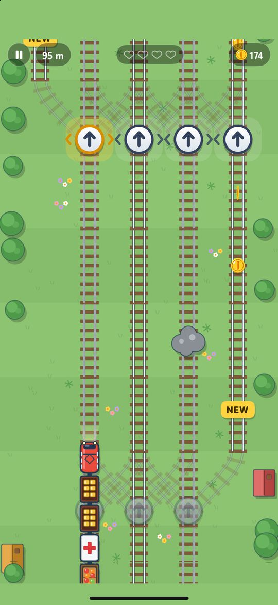
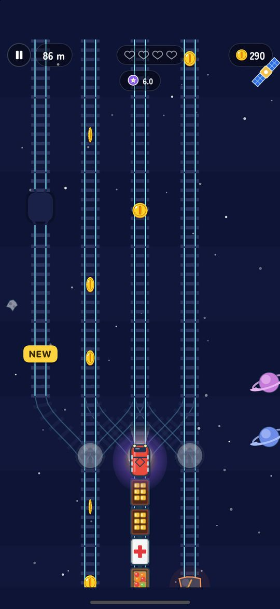
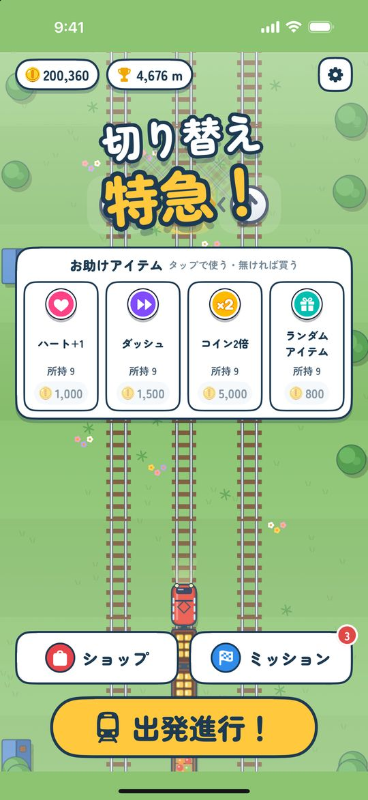
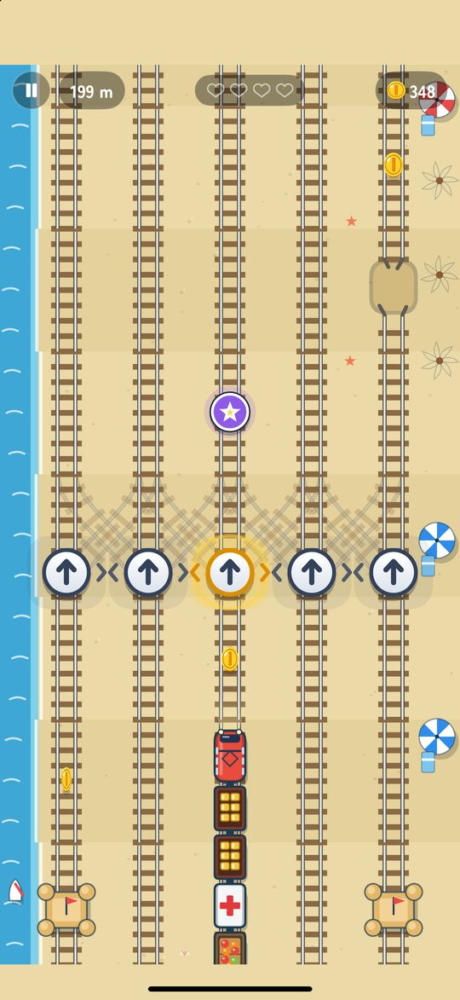
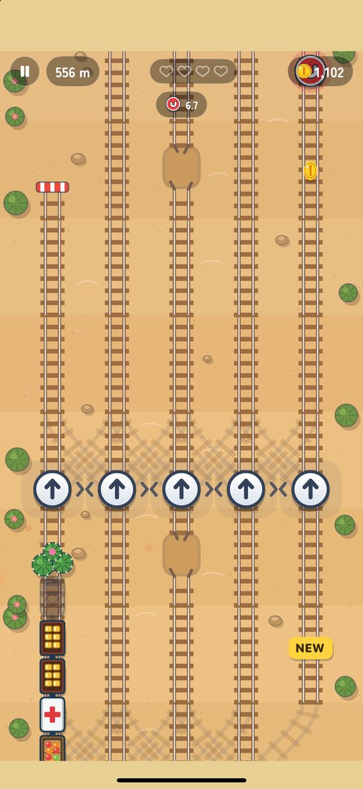
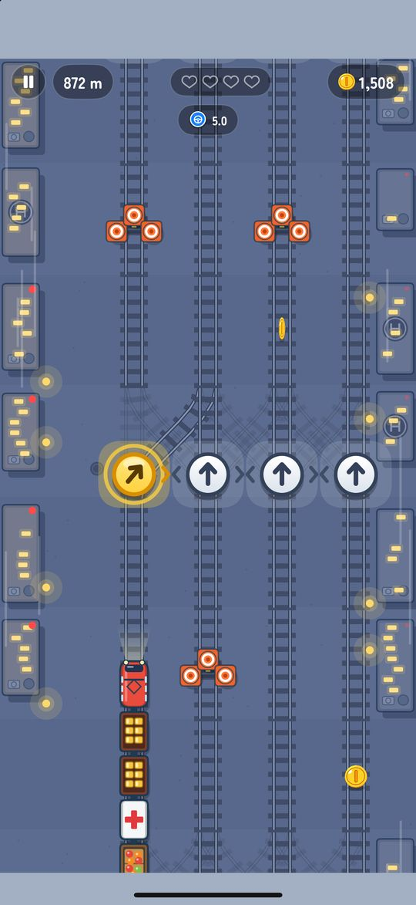
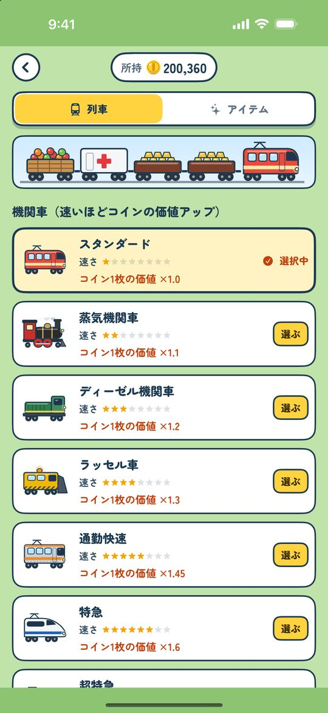

磁石
まわりの線路のコインを吸い寄せる。
線路の先には行き止まりや岩。分岐の前でフリックして、進む道を切り替えよう。ぶつかったら脱線。どこまで走れるかな？
App Store で無料iPhone・無料（広告あり）


まわりの線路のコインを吸い寄せる。

岩をこわして進める。

しばらく勝手に切り替えてくれる。
機関車8種と、荷物を積んで強くなる貨車。ミッションでもコインがもらえる。コインはお金では買えません。
← 横にすべらせて見られます →





どれも無料。遊び比べてみてください。